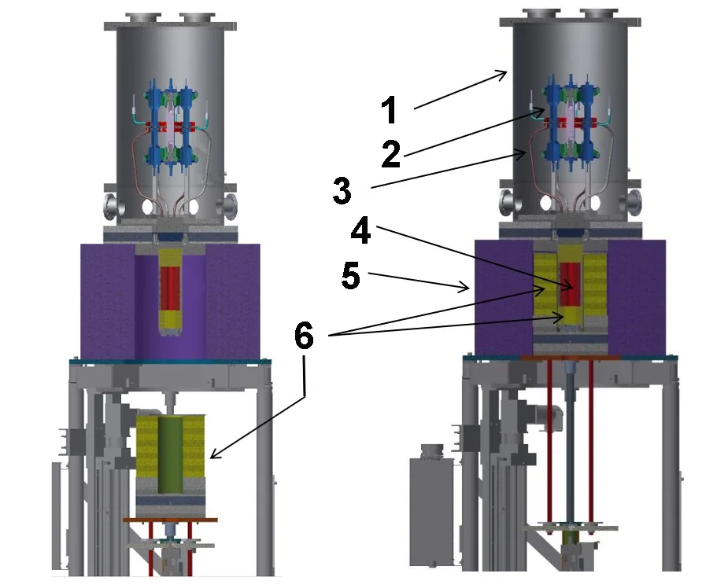
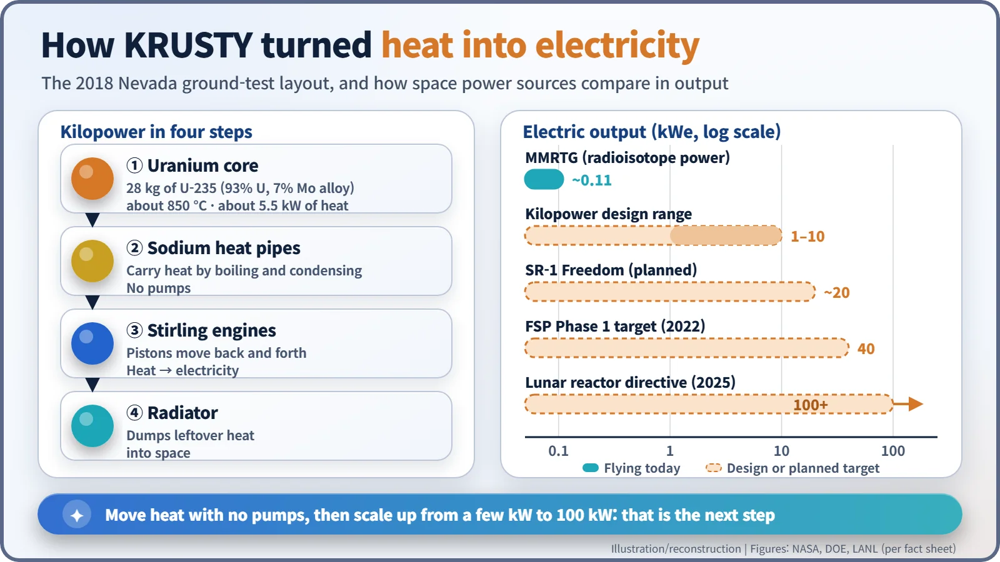
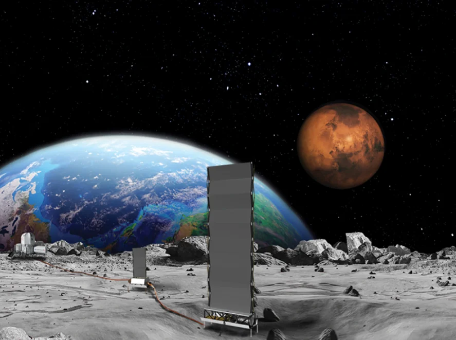
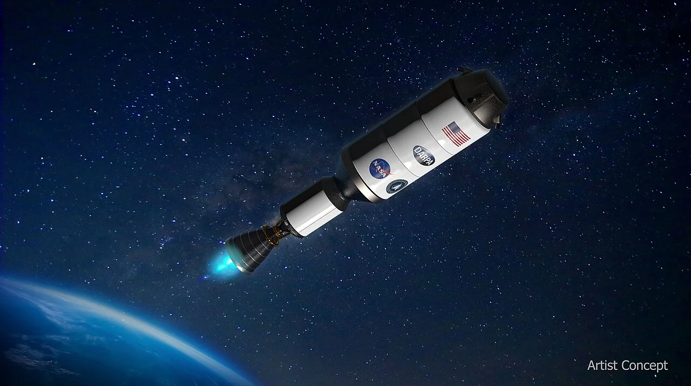

Nuclear History · 298
"A 70 Percent Solution" to Mars — From KRUSTY to DRACO and SR-1, the New Generation of Space Nuclear Power
A 28-hour reactor test in Nevada, a nuclear rocket stopped by cheaper launches, and a 20 kWe reactor aimed at Mars in 2028.
Half a century after SNAP-10A, the United States is building space reactors again. KRUSTY, a small uranium reactor with sodium heat pipes and Stirling engines, ran at full power for 28 hours in Nevada on 20 March 2018. The DRACO nuclear rocket was cancelled in 2025 on cost grounds, and the focus has shifted to lunar surface power and nuclear electric propulsion, with NASA's SR-1 Freedom targeting a Mars launch in December 2028 (as of November 2026).
"A 70 percent solution"
"A 70 percent solution to prove that it works." That is how NASA Administrator Jared Isaacman described a new spacecraft in March 2026. Its name is Space Reactor-1 Freedom, or SR-1: a Mars-bound test ship that uses a nuclear reactor to make electricity and that electricity to drive its thrusters. The message was plain: prove it in flight first, perfect it later. [3]
Until then, the United States had switched on a reactor in space exactly once, with SNAP-10A in 1965.
Why reactors again? The two-week night
Across most of the Moon, night lasts about two Earth weeks. Solar panels sit idle, and a base must ride out cold well below minus 100 °C on batteries alone. On Mars, sunlight is less than half as strong as at Earth, and dust storms can blot it out.
Radioisotope generators, which turn the decay heat of plutonium-238 into electricity, are dependable, but the MMRTG carried by NASA's Mars rovers delivers about 110 watts. A crewed outpost needs tens of kilowatts. That gap is what brought small fission reactors back.
Twenty-eight hours in Nevada: KRUSTY
The starting point was Kilopower, launched in October 2015 by NASA and the National Nuclear Security Administration (NNSA) of the US Department of Energy. The goal was a small reactor delivering 1 to 10 kilowatts of electricity (kWe) for 12 to 15 years. Its ground prototype was KRUSTY, the Kilopower Reactor Using Stirling Technology. [1]

The core was a metal cylinder about the size of a paper-towel roll, cast from an alloy of 93% uranium and 7% molybdenum and holding about 28 kg of uranium-235. Heat left the core through sodium heat pipes: sodium boils at the hot end, condenses at the cold end and flows back, carrying heat with no pumps at all. That heat drove the pistons of Stirling engines to make electricity, and a radiator dumped the rest into space.
Testing ran from November 2017 at the Nevada National Security Site and ended with a 28-hour full-power run on 20 March 2018. The core reached about 850 °C and produced about 5.5 kW of fission heat. Modest numbers, but it was the first new American space reactor design to actually operate in half a century. [1]

A power plant for the Moon: from 40 to 100 kilowatts
On 21 June 2022, NASA and the Department of Energy awarded three Fission Surface Power (FSP) concept contracts, worth about $5 million each, to Lockheed Martin, Westinghouse and IX, a joint venture of Intuitive Machines and X-energy. The target: about 40 kW for ten years, in a package under 6,000 kg. [6]

The ambition soon grew. In a memo dated 31 July 2025, Sean Duffy (born 1971), then acting NASA administrator, reportedly ordered the agency to prepare a reactor of at least 100 kWe that could launch around 2030. Press reports said the memo cited concern that the first nation to land a reactor might declare a "keep-out zone". [7]
In January 2026, NASA and the Department of Energy signed an agreement to pursue a lunar surface reactor by 2030, and in March NASA named it Lunar Reactor-1 (LR-1). As of November 2026, no final contractor had been announced. [2] [3]
DRACO: the rocket that never flew
The nuclear rocket engine had a different fate. On 24 January 2023, NASA and the Defense Advanced Research Projects Agency (DARPA) announced DRACO, a nuclear thermal rocket to be tested in orbit in 2027. A reactor would heat hydrogen and blast it out of a nozzle. The fuel was high-assay low-enriched uranium (HALEU), and the target specific impulse, a measure of fuel efficiency, was over 800 seconds. Lockheed Martin and BWXT took on the roughly $499 million effort. [5]

In January 2025 the launch was put on hold over reactor test requirements and design issues, and in May the programme was left out of NASA's fiscal 2026 budget request. In June, DARPA deputy director Rob McHenry confirmed its end, explaining that the case had weakened "as the launch costs came down". If you can lift propellant cheaply enough, a nuclear engine is less essential. DRACO was not a failed test; it was stopped by a cost and policy judgment. McHenry added that nuclear electric propulsion looked like the better long-term bet. [4] [5]
The baton passes to electric propulsion, and to other nations
That bet is SR-1 Freedom. Its reactor of about 20 kWe makes electricity with a closed Brayton cycle, essentially a gas turbine, to power Hall-effect thrusters that push out xenon. The reactor is to be switched on within 48 hours after launch, and the spacecraft is to carry three small helicopters to Mars, with launch targeted for December 2028. [3]
Radioisotope power is still in service. Dragonfly, a rotorcraft that will fly across Saturn's moon Titan, will carry an MMRTG, launch no earlier than July 2028 and arrive in 2034. [8]
Russia and China signed a cooperation memorandum on a lunar power plant in May 2025 and have said they aim to build a reactor for their International Lunar Research Station (ILRS) around 2033–2035. Russia's proposed nuclear space tug, Zeus, appears in a draft policy document published in July 2026 with nuclear flights pencilled in for after 2036. [9]
All of these plans share one safety principle: the reactor is started for the first time only after launch, in a safe orbit or trajectory. Before start-up, fresh fuel contains almost no radioactive fission products. Whether small reactors can become the trusted power source for two-week lunar nights and distant Mars is a question the years around 2030 should answer.